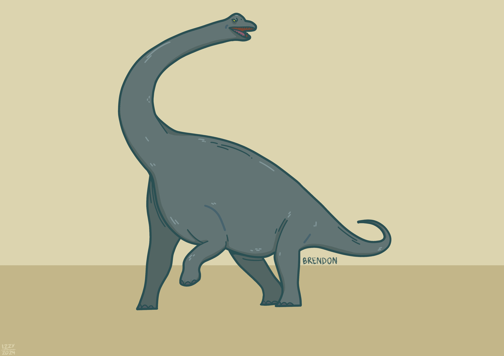
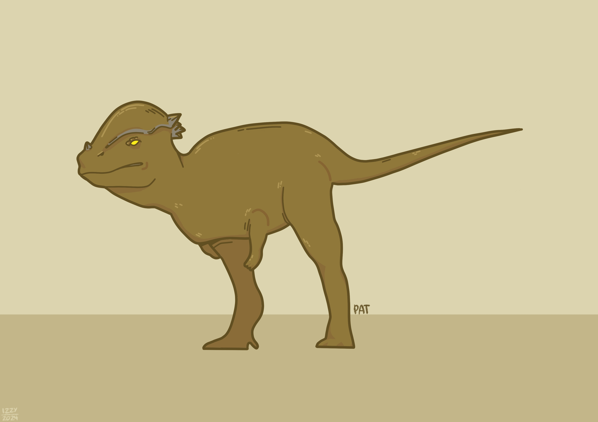
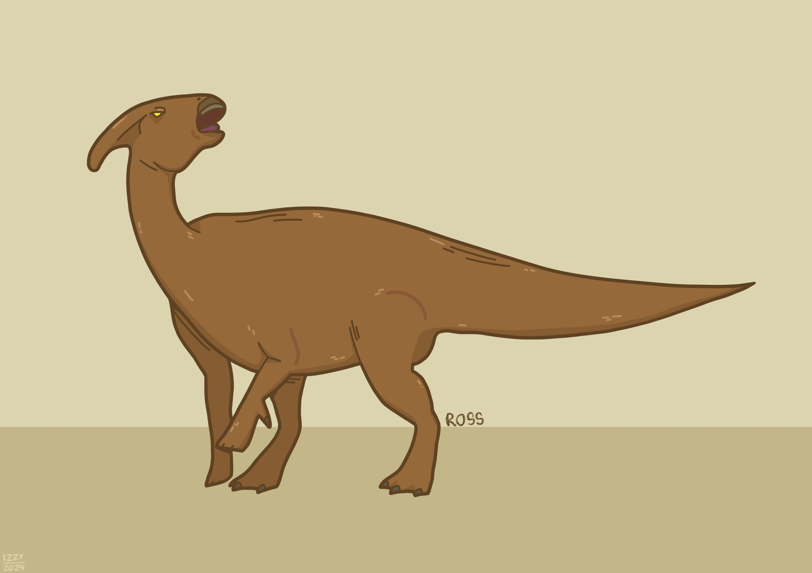
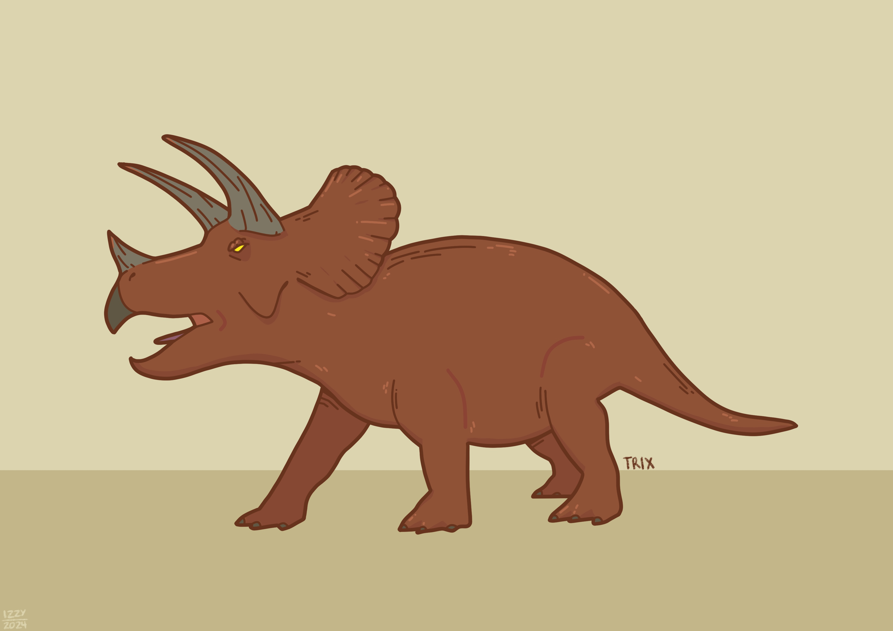

This is an extinct genus of dinosaur which lived in the very end of the Cretaceous period. It's name "Ankylosaurus" means "fused" or "bent lizard." The dinosaur's specific name, "Ankylosaurus magniventris," means "great belly." The first specimen of this dinosaur was found in 1906 by palaeontologist Barnum Brown.
This is an extinct genus dinosaur that lived in the Late Jurassic period. The name "Brachiosaurus" is Greek for "arm lizard", to refer to its proportionately long arms. It was first decribes in 1903 by paleontologist Elmer S. Riggs.
This is an extinct genus of dinosaur that was among the dinosaurs on Earth before the Cretaceous-Paleogene extinction event. The name "Pachycephalosaurus" means "thick-headed lizard", from Greek pachys-/παχύς- "thickness", kephalon/κεφαλή "head" and sauros/σαῦρος "lizard" The first remains of this dinosaur may have been found in the 1850s. As determined by Donald Baird, in 1859 or 1860, fossil collector Ferdinand Vandeveer Hayden, collected a bone fragment of its head.
This is an extinct genus of dinosaur that lived in the the Late Cretaceous period until the Cretaceous-Paleogene extinction event. The name "Parasaurolophus" means "near crested lizard", derived from Greek words para/παρα ("beside" or "near"), saurus/σαυρος ("lizard"), and lophos/λοφος ("crest"). Its skull and partial skeleton were described in 1922 by paleontologist William Parks.
>This is an exticnt genus of dinosaur that lived in the Late Cretaceous period. The name "Triceratops" menas "three horned face". Alluding to the three large horns on the skull. the first specimen of this dinosaur was discovered in 1887. It was officially named and described by paleontologist O.C. Marsh in 1889.